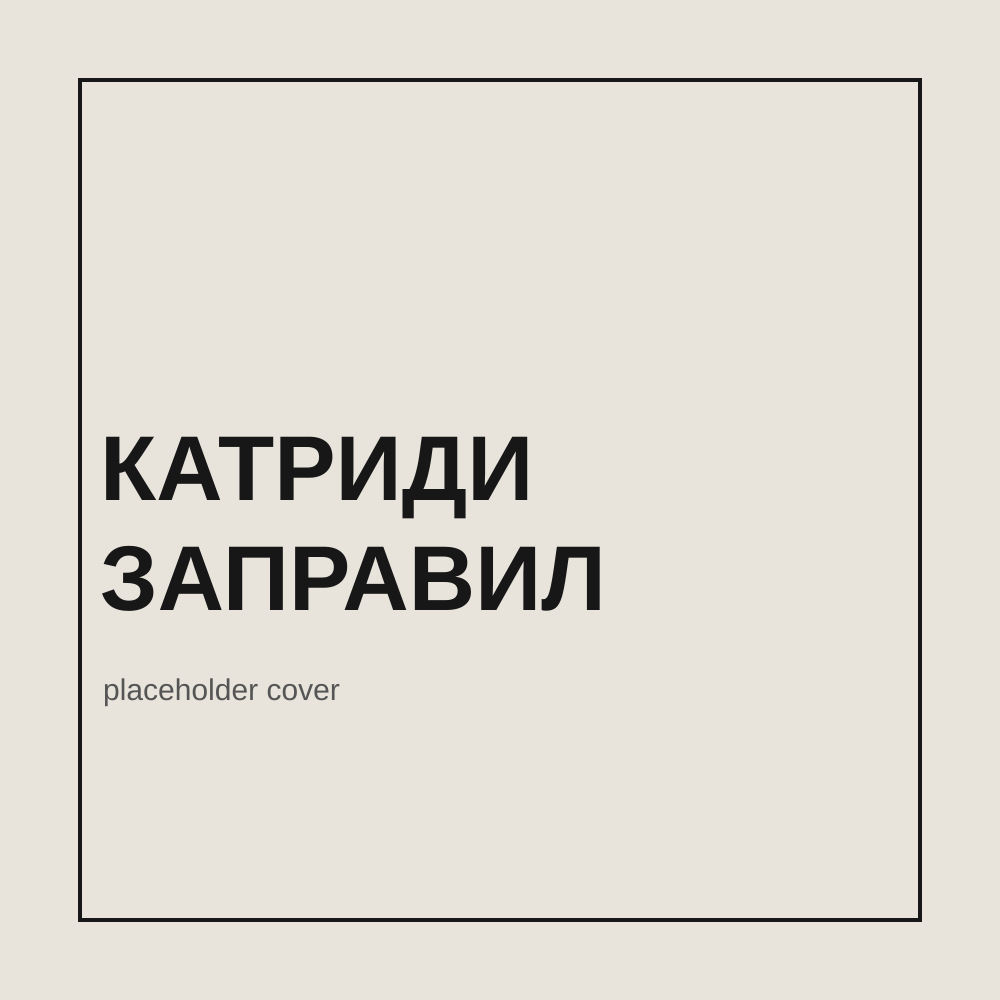

S01E01
Щенок
Первый рассказ мини-сезона «Воспоминания»
Скоро
Подкаст
В этом подкасте мои рассказы звучат голосами разных людей.
Ссылки на платформы появятся после публикации первого выпуска.
Мини-сезон «Воспоминания»
S01E01
Первый рассказ мини-сезона «Воспоминания»
СкороО проекте
«Катриди заправил» — подкаст Алексея Катриди. Каждый выпуск — отдельный рассказ, который звучит голосом приглашённого чтеца.